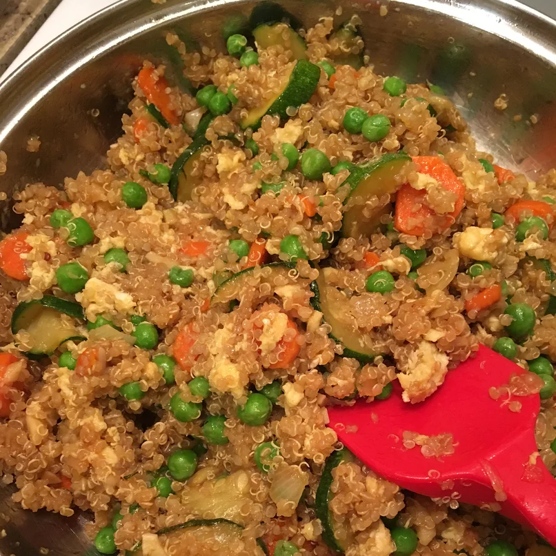

Fried Rice

Quinoa fried rice
This fried rice is a delicious meal that is able to fufill
the majority of your nutrition needs!
Ingredients
- 1 cup Quinoa
- 2 tablespoons soy sauce
- 1 teaspoon sesame oil
- 2 carrots peeled
- 3 cloves garlic, minced
- 2 eggs beaten
- 1/2 cup frozen peas
- 1/2 onion, chopped
Directions
- bring water and quinoa to a boil in a saucepan; season with salt.
reduce heat to medium-low, cover, and simmer until quinoa is tender and water
has been absorbed, 15 to 20 minutes.
Remove saucepan from heat and let sit for 5 minutes; fluff quinoa with a fork.
- mix soy sauce, teriyaki sauce and sesame oil together in a bowl
untill sauce is evenly mixed.
-
heat oil in a large skillet over high heat; saute carrots and onion for 2 minutes.
add garlic; saute untill fragrant, about 2 minutes
-
stir sauce into quinoa mixture; cook and stir until evenly coated, about 2 minutes.